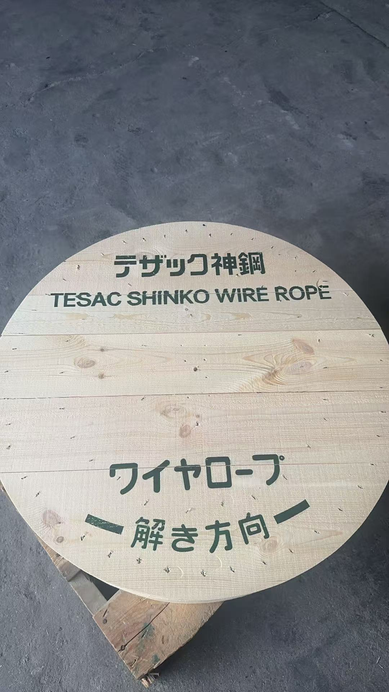
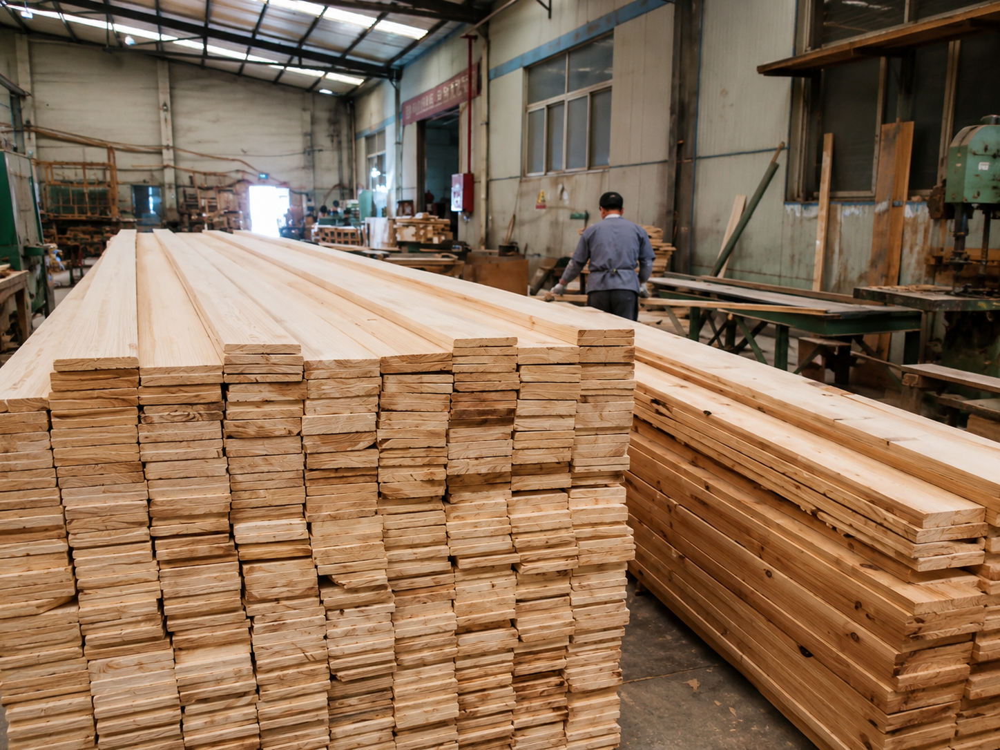
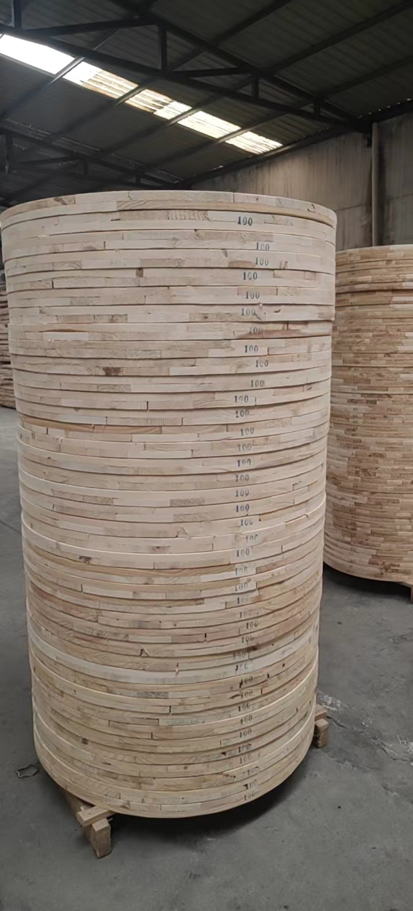
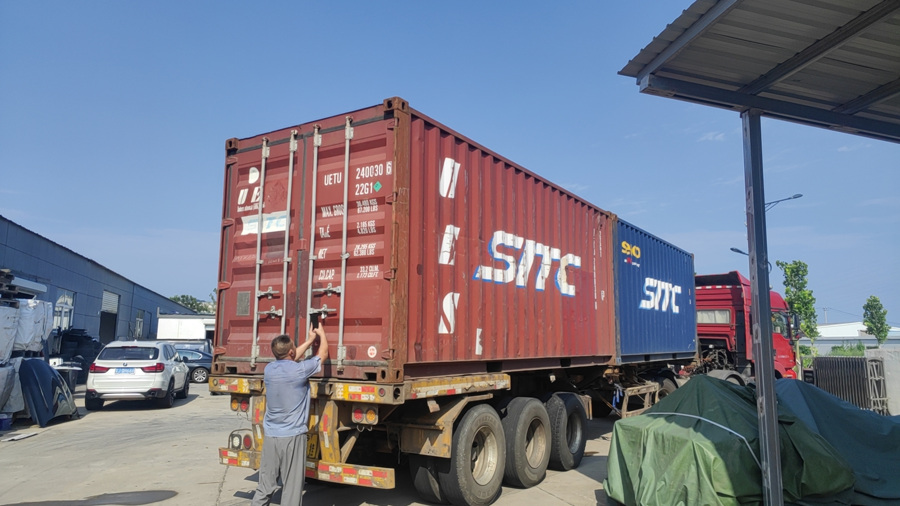

コンテナ積載と出荷前の確認
完成品の保管状態、積載方法、フォークリフト作業を動画でご覧いただけます。
WORKS & SHIPMENT REPORT
原料の準備から円形加工、検品、梱包、コンテナ積載まで、写真と動画で実際の供給現場をご確認いただけます。
仕様確認・お見積り →LATEST REPORTS
新しい内容を上から掲載しています。仕様や数量が決まっていない段階でも、お気軽にご相談ください。
完成品の保管状態、積載方法、フォークリフト作業を動画でご覧いただけます。
最新の出荷作業の様子を動画でご確認いただけます。
加工現場での作業の様子を動画でご確認いただけます。
フランジ形状への加工と、仕上がりを確認する工程です。

用途や仕様に合わせた印字、外観、完成後の扱いやすさを確認します。

木材の状態を確認し、用途・強度・数量に合わせて材料を準備します。

数量をまとめて保管し、梱包・積載・納品先を確認して出荷します。

現場の作業状況を確認し、日本向けの出荷条件に合わせて進めます。
FOR PURCHASING TEAMS
ご希望のサイズ、孔加工、数量、希望時期があれば、分かる範囲でお知らせください。掲載内容にない仕様も確認のうえご案内します。
仕様を送って相談する →